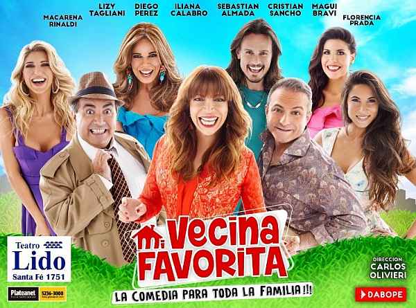
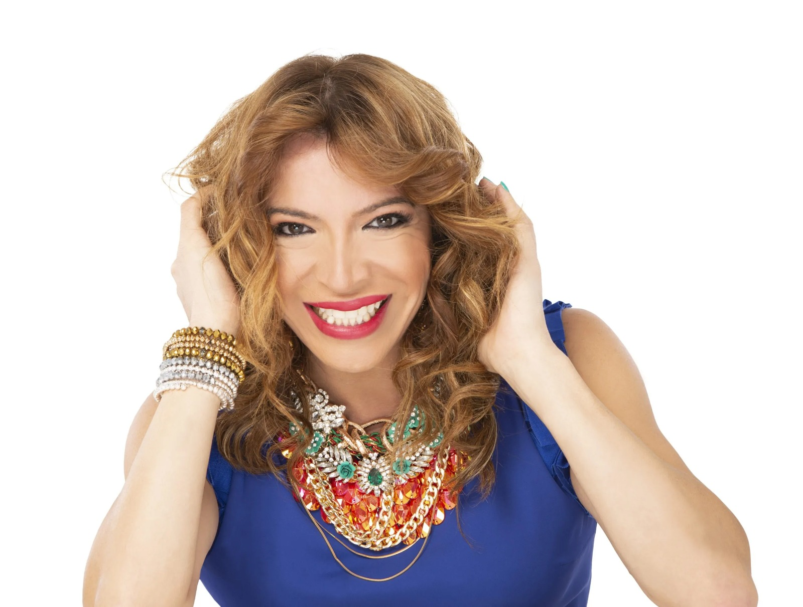
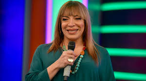

Lizy Tagliani ha demostrado ser una artista multifacética con una destacada trayectoria en la televisión y el teatro. Su carisma, naturalidad y compromiso la convirtieron en una figura querida por el público y respetada en el ambiente artístico. Participó en exitosas obras como "Mi vecina favorita" y en diversas ficciones televisivas, mostrando su versatilidad como actriz cómica y dramática.
Actriz
Comediante
Su carrera comenzó en el mundo del espectáculo como comediante. Con un estilo espontáneo, picante y entrañable, Lizy se hizo popular en programas de humor y stand-up. Su participación en programas como Showmatch y sus rutinas en teatros porteños la consolidaron como una de las humoristas más queridas del país.
Conductora
Desde 2015 forma parte del canal Telefe, donde se destacó como conductora de "Trato Hecho" durante 2021 y 2022. También fue co-conductora del programa radial Perros de la Calle en Urbana Play FM. Participó como panelista en Gran Hermano y como concursante en Showmatch: Bailando. Actualmente, conduce "La Peña de Morfi" y protagoniza la obra teatral "Cambio las cosas 700 veces".
Lizy nació en la ciudad de Resistencia, capital de la provincia del Chaco, Argentina. A los veinte días de nacida, su familia se trasladó al partido de Almirante Brown, en la provincia de Buenos Aires, donde crecieron en el barrio San Miguel de la ciudad de Burzaco. Desde muy joven, Lizy mostró interés por el arte, la peluquería y el humor. Comenzó trabajando como peluquera mientras estudiaba teatro y construía su identidad artística y personal.
Su debut en los medios masivos fue en programas de entretenimiento y humor, donde rápidamente se ganó el cariño del público por su autenticidad y carisma. A partir de allí, desarrolló una carrera en el teatro comercial y la televisión. Ha trabajado con grandes figuras del espectáculo y, con el tiempo, se consolidó no solo como actriz, sino también como símbolo de inclusión y superación en los medios argentinos.
Premios Martín Fierro:
- 2019: Mejor Labor Humorística en Radio por su participación en El Club del Moro.
- 2024: Mejor Big Show por su labor como conductora en Got Talent Argentina (Telefe).
Premios Carlos:
- 2025: Carlos Especial del Jurado, otorgado por su destacada trayectoria y aporte al espectáculo argentino.